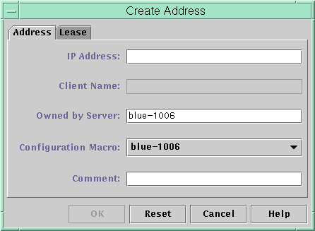
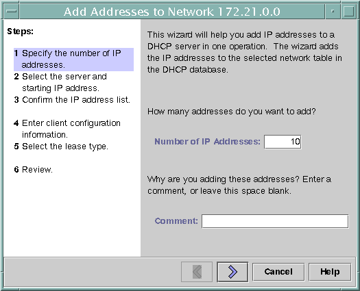

Previous
Previous
 How to Set Up Support of Registered BOOTP
Clients (DHCP Manager)
How to Set Up Support of Registered BOOTP
Clients (DHCP Manager)
In DHCP Manager, select Modify from the Service menu.
The Modify Service Options dialog box opens.
See How to Start and Stop DHCP Manager for information about DHCP Manager.
In the BOOTP Compatibility section of the dialog box, select Manual.
Select Restart Server, and click OK.
Select the Addresses tab.
Select an address that you want to assign to a particular BOOTP client.
Choose Properties from the Edit menu.
The Address Properties dialog box opens.
In the Address Properties dialog box, select the Lease tab.
In the Client ID field, type the client's identifier.
For a BOOTP Solaris client on an Ethernet network, the client ID is a string that is derived from the client's hexadecimal Ethernet address. The client ID includes a prefix that indicates the Address Resolution Protocol (ARP) type for Ethernet (01). For example, a BOOTP client with the Ethernet address 8:0:20:94:12:1e would use the client ID 0108002094121E.
Tip - As superuser on a Solaris client system, type the following command to obtain the Ethernet address for the interface:
# ifconfig -a
Select Reserved to reserve the IP address for this client.
Select Assign Only to BOOTP Clients, and click OK.
In the Addresses tab, BOOTP is displayed in the Status field, and the client ID you specified is listed in the Client ID field.
Working With IP Addresses in the DHCP Service (Task Map)
You can use DHCP Manager or the pntadm command to add IP addresses, modify address properties, and remove addresses from the DHCP service. Before you work with IP addresses, you should refer to Table 15-4 to become familiar with IP address properties. The table provides information for users of DHCP Manager and pntadm.
Note - Table 15-4 includes examples of using pntadm to specify IP address properties while adding and modifying IP addresses. Refer also to the pntadm(1M) man page for more information about pntadm.
The following task map lists tasks that you must perform to add, modify, or remove IP addresses. The task map also contains links to the procedures used to carry out the tasks.
Task | Description | For Instructions |
|---|---|---|
Add single or multiple IP addresses to the DHCP service. | Adds IP addresses on networks that are already managed by the DHCP service by using DHCP Manager. | How to Add a Single IP Address (DHCP Manager) How to Duplicate an Existing IP Address (DHCP Manager) |
Change properties of an IP address. | Changes any of the IP address properties described in Table 15-4. | |
Remove IP addresses from the DHCP service. | Prevents the use of specified IP addresses by DHCP. | How to Mark IP Addresses as Unusable (DHCP Manager) How to Mark IP Addresses as Unusable (pntadm) |
Assign a consistent IP address to a DHCP client. | Sets up a client to receive the same IP address each time the client requests its configuration. | How to Assign a Consistent IP Address to a DHCP Client (DHCP Manager) How to Assign a Consistent IP Address to a DHCP Client (pntadm) |
The following table lists and describes the properties of IP addresses.
Table 15-4 IP Address Properties
Property | Description | How to Specify in pntadm Command |
|---|---|---|
Network address | The address of the network that contains the IP address that you are working with. The network address is displayed in the Networks list within the Addresses tab in DHCP Manager. | The network address must be the last argument on the pntadm command line used to create, modify, or delete an IP address. For example, to add an IP address to network 10.21.0.0, you would type: pntadm -A ip-address options 10.21.0.0 |
IP address | The address you are working with, whether you are creating, modifying, or deleting the address. The IP address is displayed in the first column of the DHCP Manager's Addresses tab. | The IP address must accompany the -A, -M, and -D options to the pntadm command. For example, to modify IP address 10.21.5.12, you would type: pntadm -M 10.21.5.12 options 10.21.0.0 |
Client name | The host name mapped to the IP address in the hosts table. This name can be automatically generated by DHCP Manager when addresses are created. If you create a single address, you can supply the name. | Specify the client name with the -h option. For example, to specify client name carrot12 for 10.21.5.12, you would type: pntadm -M 10.21.5.12 -h carrot12 10.21.0.0 |
Owned by server | The DHCP server that manages the IP address and responds to the DHCP client's request for IP address allocation. | Specify the owning server name with the -s option. For example to specify server blue2 to own 10.21.5.12, you would type: pntadm -M 10.21.5.12 -s blue2 10.21.0.0 |
Configuration macro | The macro that the DHCP server uses to obtain network configuration options from the dhcptab table. Several macros are created automatically when you configure a server, and when you add networks. See About DHCP Macros for more information about macros. When addresses are created, a server macro is also created. The server macro is assigned as the configuration macro for each address. | Specify the macro name with the -m option. For example, to assign the server macro blue2 to address 10.21.5.12, you would type: pntadm -M 10.21.5.12 -m blue2 10.21.0.0 |
Client ID | A text string that is unique within the DHCP service. If the client ID is listed as 00, the address is not allocated to any client. If you specify a client ID when modifying the properties of an IP address, the address is bound exclusively to that client. The client ID is determined by the vendor of the DHCP client. If your client is not a Solaris DHCP client, consult your DHCP client documentation for more information. | Specify the client ID with the -i option. For example, to assign client ID 08002094121E to address 10.21.5.12, you would type: pntadm -M 10.21.5.12 -i 0108002094121E 10.21.0.0 |
For Solaris DHCP clients, the client ID is derived from the client's hexadecimal hardware address. The client ID includes a prefix that represents the ARP code for the type of network, such as 01 for Ethernet. The ARP codes are assigned by the Internet Assigned Numbers Authority (IANA) in the ARP Parameters section of the Assigned Numbers standard at http://www.iana.com/numbers.html For example, a Solaris client with the hexadecimal Ethernet address 8:0:20:94:12:1e uses the client ID 0108002094121E. The client ID is listed in DHCP Manager and pntadm when a client is currently using an address. Tip: As superuser on the Solaris client system, type the following command to obtain the Ethernet address for the interface: ifconfig -a |
| |
Reserved | The setting that specifies the address is reserved exclusively for the client indicated by the client ID, and the DHCP server cannot reclaim the address. If you choose this option, you manually assign the address to the client. | Specify that the address is reserved, or manual, with the -f option. For example, to specify that IP address 10.21.5.12 is reserved for a client, you would type: pntadm -M 10.21.5.12 -f MANUAL 10.21.0.0 |
Lease type or policy | The setting that determines how DHCP manages the use of IP addresses by clients. A lease is either dynamic or permanent. See Dynamic and Permanent Lease Types for a complete explanation. | Specify that the address is permanently assigned with the -f option. Addresses are dynamically leased by default. For example, to specify that IP address 10.21.5.12 has a permanent lease, you would type: pntadm -M 10.21.5.12 -f PERMANENT 10.21.0.0 |
Lease expiration date | The date when the lease expires, applicable only when a dynamic lease is specified. The date is specified in mm/dd/yyyy format. | Specify a lease expiration date with the -e option. For example, to specify an expiration date of January 1, 2006, you would type: pntadm -M 10.21.5.12 -e 01/01/2006 10.21.0.0 |
BOOTP setting | The setting that marks the address as reserved for BOOTP clients. See Supporting BOOTP Clients With the DHCP Service (Task Map) for more information about supporting BOOTP clients. | Reserve an address for BOOTP clients with the -f option. For example, to reserve IP address 10.21.5.12 for BOOTP clients, you would type: pntadm -M 10.21.5.12 -f BOOTP 10.21.0.0 |
Unusable setting | The setting that marks the address to prevent assignment of the address to any client. | Mark an address as unusable with the -f option. For example, to mark IP address 10.21.5.12 as unusable, you would type: pntadm -M 10.21.5.12 -f UNUSABLE 10.21.0.0 |
Adding IP Addresses to the DHCP Service
Before you add IP addresses, you must add the network that owns the addresses to the DHCP service. See Adding DHCP Networks for information about adding networks.
You can add addresses with DHCP Manager or the pntadm command.
On networks that are already managed by the DHCP service, you can add addresses in several ways with DHCP Manager:
Add a single IP address - Place one new IP address under DHCP management.
Duplicate an existing IP address - Copy the properties of an existing IP address managed by DHCP, and supply a new IP address and client name.
Add a range of multiple IP addresses - Use the Address Wizard to place a series of IP addresses under DHCP management.
The following figure shows the Create Address dialog box. The Duplicate Address dialog box is identical to the Create Address dialog box, except that the text fields display the values for an existing address.
Figure 15-8 Create Address Dialog Box in DHCP Manager
The following figure shows the first dialog of the Add Addresses to Network wizard, used to add a range of IP addresses.
Figure 15-9 Add Addresses to Network Wizard in DHCP Manager
How to Add a Single IP Address (DHCP Manager)
In DHCP Manager, select the Addresses tab.
See How to Start and Stop DHCP Manager for information about DHCP Manager.
Select the network where the new IP address is to be added.
Choose Create from the Edit menu.
The Create Address dialog box opens.
Select or type values for the address settings on the Address and Lease tabs.
Select the Help button to open a web browser to display help for the dialog box. Also, see Table 15-4 for detailed information about the settings.
Click OK.